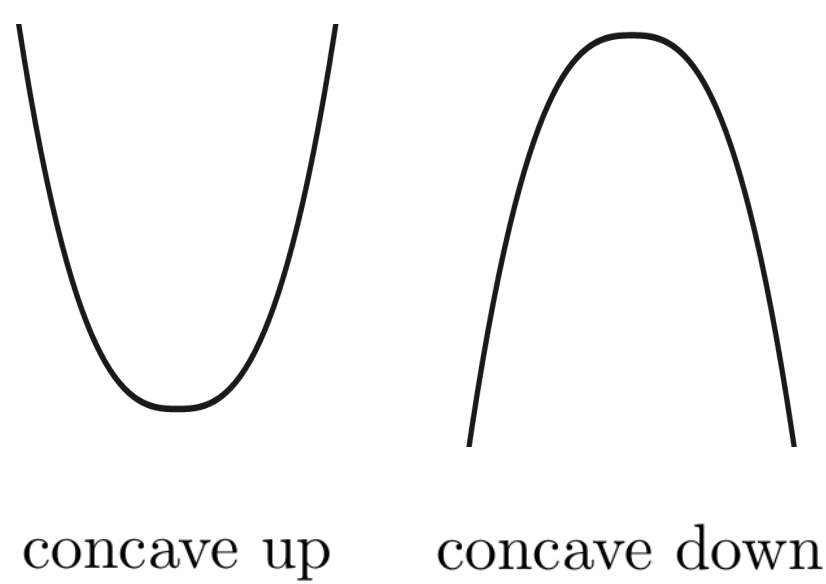
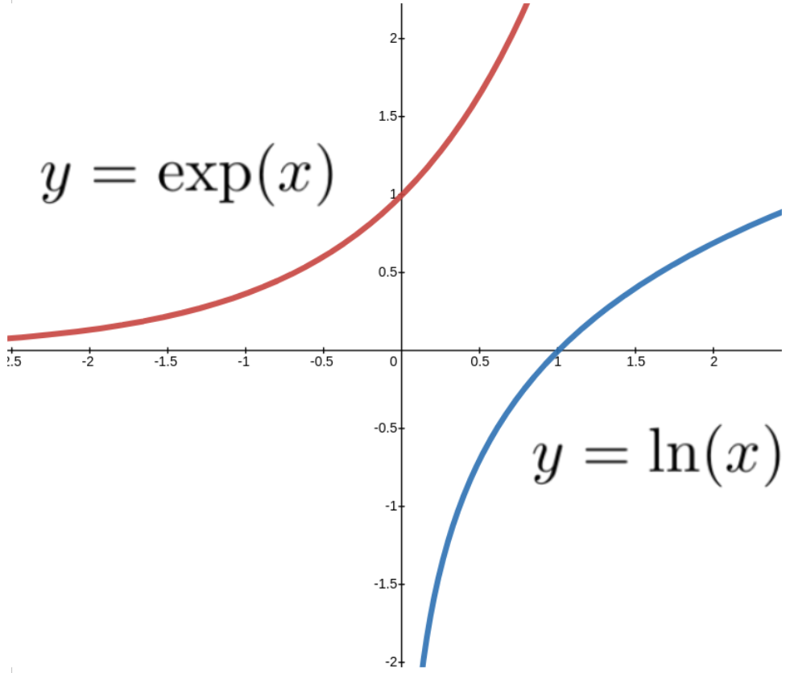
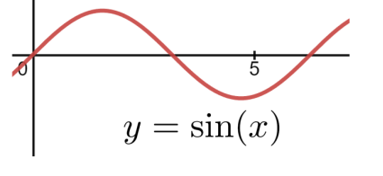
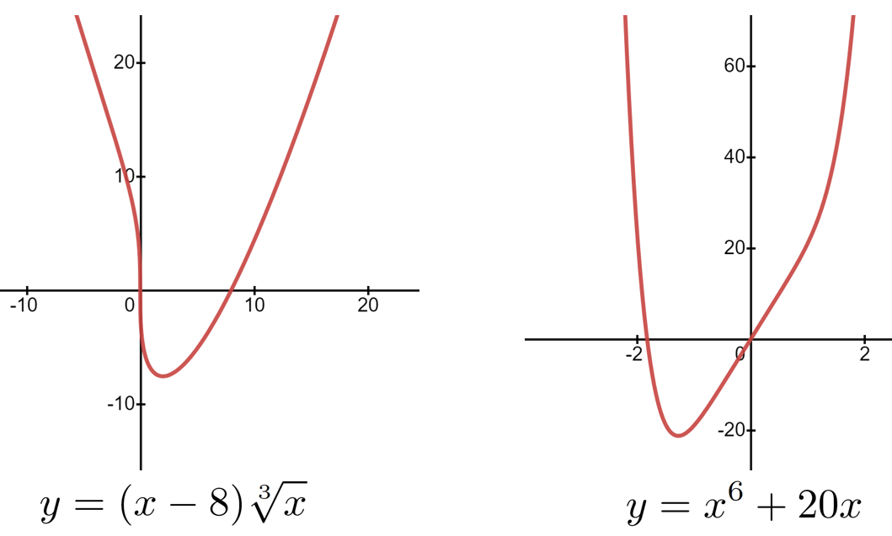
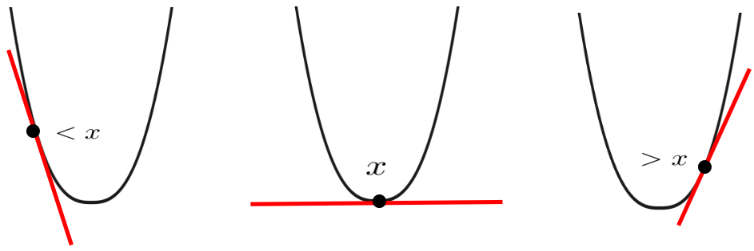

Section9.6Concavity and the Second Derivative Test
Subsection9.6.1The Second Derivative Test
Theorem 9.5.21 explicitly assumed that the domain of our function consisted of closed (and bounded) intervals. This assumption was crucial. Without this assumption even simple functions that you would expect to have extrema do not.
Example9.6.1.
For example, suppose our objective function is \(O(x)=x\text{,}\) and that the domain is the open interval \((-1,1)\text{.}\) Do you see why the graph of this function has no extrema of any kind? If not here is one way to prove it.
Proof.
Observe that \(\dfdx{O}{x}=1\gt 0\text{.}\) Therefore \(O(x)\) is always increasing on \((-1,1)\text{.}\) If \(x\) is any number between \(-1\) and \(1\) then \(O(x)\) can’t be a maximum (minimum) because any number just to the right (left) of \(x\) will give us an \(O(x)\) that is higher (lower) than \(O(x)\text{.}\) Can we always find a number “just to the right” of \(x\) without leaving the interval \((-1,1)?\) Sure. Just take the number halfway between \(x\) and \(1.\)
Problem9.6.2.
Show that the function \(O(x)=x\) also has no minimum on the open interval \((-1,1)\text{.}\)
This leaves us with a dilemma: If the domain is not closed and bounded we can’t rely on the Extreme Value Theorem 9.5.21 to guarantee the existence of extrema. In fact Example 9.6.1 shows that there might not be any extrema. But if there are we’d still like to be able to find them.
This is a problem but it is not an insurmountable problem. In fact we already have most of the tools we need. It is still true that local extrema, if they exist, can only occur at optimal transition points or at endpoints. So finding these is still the first step.
Example9.6.3.
For this example we strongly suggest that you do not graph the objective functions first. Yes, we know this goes directly against our previous advice to always visualize your problem when you can, but one purpose of this section is for you to learn to analyze a problem using only your Calculus tools. Much as an airline pilot must train to fly using only the cockpit instruments in case poor visibility gives them no other choice, you should also practice “flying blind” so you can be successful even when you are not able to draw a useful graph. You will learn more, and you will learn better, that way.
Of course, once we’ve moved beyond this section you should visualize your problem if you possibly can. We weren’t kidding about that. You don’t want to fly blind, you just need to be able to when it is necessary.
From the information gathered in Problem 9.6.4 can we conclude that either \(O_1(x)\) or \(O_2(x)\) has a global maximum at \(x=-1\) and a global minimum at \(x=1\text{?}\)
No we can’t. They both have local maxima and minima at those points since both functions increase on \((-\infty,-1)\text{,}\) decrease on \((-1,1)\text{,}\) and then increase again on \((1,\infty)\text{.}\) But from the information we have gathered so far we can’t tell if the graph of either function rises above its value at \(x=-1\) or drops below its value at \(x=1\) .
When we analyze \(O_1(x)\) and \(O_2(x)\) using the First Derivative Test 9.5.4 we get exactly the same information from both functions. But they are very different functions. In particular, \(O_1(x)\) does not have any global extrema, while \(O_2(x)\) has both a global maximum and a global minimum. Graph them now and see.
To distinguish, analytically, between \(O_1(x)\) and \(O_2(x)\) we will need a new tool called the Second Derivative Test.
But before we leave this example we need to address a small issue with our language. The phrase “\(x\) gets farther from zero in the positive (or negative) direction so does \(O_1(x)\)” is both awkward and a bit imprecise for our purposes. In the future we will usually abbreviate this as: “as \(x\) goes to positive (or negative) infinity, \(O_1(x)\) also goes to positive (or negative) infinity.”
Do not invest too much in these phrases. They cannot possibly mean what they pretend to mean. “Infinity” is neither a number nor a place so it is meaningless to say that \(x\) “goes to” infinity. Think of this phrasing as a kind of verbal shorthand, or notation.
Problem9.6.4.
(a)
Suppose that \(O_1(x)=3x^3-9x\text{.}\)
Show that the POTPs are \(x=-1\) and \(x=1\text{.}\)
Show that \(O_1(x)\) is increasing on \((-\infty,-1)\text{,}\) decreasing on \((-1,1)\text{,}\) and increasing again on \((1,\infty)\text{.}\)
(b)
Suppose that \(O_2(x)=\frac{-x}{x^2+1}\text{.}\) Show that \(O_2(x)\) is increasing on \((-\infty,-1)\text{,}\) decreasing on \((-1,1)\text{,}\) and increasing again on \((1,\infty)\text{.}\)
Just as the First Derivative Test 9.5.4 tells us whether the graph of a function is increasing or decreasing, the Second Derivative Test tells us whether the graph is concave upward or concave downward. We begin by explaining the meaning of the phrases concave upward and concave downward. The graphs below are illuminative.

Loosely speaking concave upward means “like a bowl that opens up,” and concave downward means “like a bowl that opens down.” However it is easy to get the wrong impression from these simple examples. The graphs of the natural exponential and the natural logarithm (seen below) are also concave upward and concave downward, respectively. This is true despite the fact that the exponential never turns up on the left, and the logarithm never turns down on the right.

Figure9.6.5.The graph of \(\exp(x)\) is concave up. The graph of \(\ln(x)\) is concave down.
Nor is every graph always concave up or concave down. We can see from its graph below that the sine function is both concave upward and concave downward. On the interval \((0,\pi)\) it is concave downward and on the interval \((\pi,2\pi)\) it is concave upward. The concavity of a graph, like the property of increasing and decreasing, depends on the interval we are looking at.

Now what about these two functions?

Can you tell from the graph what the concavity of either function is near \(x=0\text{?}\) If it is important for us to distinguish concave upward from concave downward (it is), then clearly we will need a more precise method than simply looking at graphs. We’ll proceed carefully.
Since we’re studying Calculus it seems likely that the derivative will play an instrumental role, so let’s see what we can say about the derivative of a function whose graph is concave upward as shown below.

In this example notice how the slope of the line tangent to the graph (the derivative) changes as \(x\) increases. At \(x\) the tangent line is horizontal (slope is zero), to the left of \(x\) the tangent line has negative slope and to the right it has positive slope. Speaking loosely, when the graph of a function is concave up its the derivative increases as \(x\) increases.
Drill9.6.6.
Does that mean that the derivative of a concave downward function will decrease as \(x\) increases? Yes, of course it does. Look back at the graphs of the other “concave up” and “concave down” examples and convince yourself that this is true of them as well.
Apparently in order to distinguish where a function is concave upward from where it is concave downward we need to locate those intervals where the derivative is increasing and where it is decreasing. That is, we need a tool that tells when some function (the derivative function in this case) is increasing and when it is decreasing.
To find out where the graph of \(y(x)\) is concave upward or concave downward, we ask where its derivative, \(y^\prime(x)=\dfdx{y}{x}\text{,}\) is increasing and where it is decreasing. To find out where \(y^\prime(x)=\dfdx{y}{x}\) is increasing and decreasing we ask where its derivative, \(y^{\prime\prime}(x)=\dfdxn{y}{x}{2}\text{,}\) is positive and where it is negative.
The function \(y^\prime(x)=\dfdx{y}{x}\) will be increasing (meaning that \(y(x)\) is concave upward) wherever its derivative, \(y^{\prime\prime}(x)=\dfdxn{y}{x}{2}\text{,}\) is positive. It will be decreasing (\(y(x)\) is concave downward) wherever its derivative, \(y^{\prime\prime}(x)=\dfdxn{y}{x}{2}\text{,}\) is negative.
So, to determine concavity of \(y(x)\text{,}\) we need to look at the sign of its second derivative, \(y^{\prime\prime}(x)=\dfdxn{y}{x}{2}\text{.}\) More formally we have the following theorem.
Theorem9.6.7.Concavity.
Suppose \(y=y(x)\) is a differentiable function of \(x.\) The following statements are true:
If \(\eval{\dfdxn{y}{x}{2}}{x=a}{}\gt 0\) on some open interval then \(\dfdx{y}{x}\) is increasing, and therefore the graph of \(y\) is concave upward, on the same interval.
If \(\eval{\dfdxn{y}{x}{2}}{x=a}{}\lt 0\) on some open interval then \(\dfdx{y}{x}\) is decreasing, and therefore the graph of \(y\) is concave downward, on the same interval.
Example9.6.8.
Let \(y=x^2.\) Then \(\dfdx{y}{x}=2x,\) and \(\dfdxn{y}{x}{2}=2.\) Since the second derivative of \(y\) is always positive the graph must always be concave upward.
Drill9.6.9.
Graph \(y=x^2\) and verify that it is always concave upward.
Example9.6.10.
Let \(y=x^3.\) Then \(\dfdx{y}{x}=6x^2,\) and \(\dfdxn{y}{x}{2}=3x.\) Since the second derivative of \(y\) is negative on the interval \((-\infty,0)\) the graph must be concave downward on for \(x\lt0\text{.}\) Since the second derivative of \(y\) is positive on the interval \((0,\infty)\) the graph must be concave upward for \(x\gt0\text{.}\)
Drill9.6.11.
Graph \(y=x^3\) and verify that it is always concave downward on the interval \((-\infty, 0)\text{,}\) and concave upward on the interval \((0,\infty)\text{.}\)
The point to remember is that we are ultimately interested in what the first two derivatives, \(\dfdx{y}{x}\) and \(\dfdxn{y}{x}{2}\text{,}\) tell us about the graph of \(y(x)\text{.}\) Because we are applying the First Derivative Test 9.5.4 to the first derivative of \(y(x)\) our language necessarily gets a little complex here. We will define some vocabulary to help us keep all of this clear.
Recall that we called the solutions of \(\dfdx{y}{x}=0\) possible optimal transition points (POTPs) because these are the places where the graph of \(y(x)\) might transition between increasing and decreasing.
Similarly, we will call the solutions of \(\dfdxn{y}{x}{2}=0\) possible inflective transition points (PITPs) because they are those places where the inflection of the graph of \(y(x)\) might transition between concave upward and concave downward.
Problem9.6.12.
Suppose that \(y(x)=x^4-x^2\text{.}\)
(a)
Show that the PITPs of \(y(x)\) are \(x=-\frac{1}{\sqrt{6}}\text{,}\) and \(x=\frac{1}{\sqrt{6}}\text{.}\)
(b)
Show that the graph of \(y\) is concave upward on the intervals \(\left(-\infty,\frac{-1}{\sqrt{6}}\right)\) and \(\left(\frac{1}{\sqrt{6}},\infty\right)\text{.}\)
(c)
Show that the graph of \(y\) is concave downward on the interval \(\left(\frac{-1}{\sqrt{6}},\frac{1}{\sqrt{6}}\right)\) by showing that \(\dfdxn{y}{x}{0}\lt0 \) for every value of \(x\) in the interval.
You showed in Problem 9.6.12 that \(y=x^3-x^2\) is concave down on the entire interval \(\left(\frac{-1}{\sqrt{6}},\frac{1}{\sqrt{6}}\right)\text{.}\) In particular it is concave down at the point \(x=0\) because zero is in the interval.
But notice that since \(\eval{\dfdx{y}{x} }{x}{0}=0\) the line tangent to the graph of \(y\) at \(x=0\) must be horizontal. Taking these two facts together we can conclude that \(y(x)\) must have a (local) maximum at \(x=0.\) (Why?)
. It is surprisingly common for both the first and second derivative to be equal to zero at a POTP. When this happens the Second Derivative Test cannot tell us whether we are at an optimal point or not, so we have to fall back on the First Derivative Test 9.5.4 and analyze the intervals between the the POTPs.
Drill9.6.16.
Analyze the concavity of the graphs of each of the following functions.
\(\displaystyle y(x)=x^4\)
\(\displaystyle y(x)= x^3\)
\(\displaystyle y(x)= x^4(x-1)^3\)
\(\displaystyle y(x)=\frac{1}{x^4+1}\)
\(\displaystyle y(x)=x^4+x^3\)
\(\displaystyle y(x)= e^{-x^3}\)
Drill9.6.17.
Identify all intervals where the given curve is concave upward, concave downward, increasing, and decreasing. Identify all local extrema, and all global extrema, if any. Graph the curve to check your work after you have solved each problem.
\(\displaystyle y=x^3-2x^2+x+1\)
\(\displaystyle y= 3x^4-4x^3+6\)
\(\displaystyle y=2x^6-6x^4\)
\(\displaystyle y=(x^2-1)^2\)
\(\displaystyle y=\sqrt[5]{x}-1\)
\(\displaystyle y=x^2-\frac{27}{x^2}\)
\(\displaystyle y=\frac{x}{x^2+1}\)
\(\displaystyle y=\sqrt[3]{x^2}(3x+10)\)
\(\displaystyle y=8x^{\frac13}+x^{\frac43}\)
\(\displaystyle y=\sqrt[3]{x}(x-8)\)
\(\displaystyle y=\sin^2(x)\)
\(\displaystyle y=x+\sin(x)\)
\(\displaystyle y=\cos(2x)+\sin(2x)\)
\(\displaystyle y=xe^x\)
\(\displaystyle y=x^3e^{-x^2}\)
\(\displaystyle y=x\ln(x)\)
\(\displaystyle y=x^2\ln(x)\)
\(\displaystyle y=\ln(x)e^x\)
Problem9.6.18.
Show that \(y(x)=\frac{x(x-1)}{x^3-27}\) has:
(a)
both a global and a local minimum if its domain is the interval \((-5,0)\text{,}\) and
(b)
only a local minimum if its domain is the interval \(\left(-5, \frac52\right)\text{.}\)
(c)
Does the graph of this function have a global maximum for either of the domains given in parts (a) or (b)? Explain.
Problem9.6.19.
Does \(f(x)=\sin(x)\) have a global extremum (minimum or maximum) on the interval \(\left(0,\frac{\pi}{2}\right)\text{?}\) How about on \((0,
\pi)\text{?}\) On \((0, 2\pi)\text{?}\) Explain.
Suppose that \(O(x) = \frac{x^2}{1+x^2}\) and that the domain of the problem is all real numbers (\(\RR\)).
(a)
Find all local extrema.
(b)
Find all global extrema.
Problem9.6.21.
Consider the polynomial \(y(x) = (x+1)^3(x-1)(x+3)\text{.}\)
(a)
Show that \(\dfdxat{y}{x}{-1}=0.\)
Hint.
You can save yourself a lot of work on this problem by keeping your eye on the goal. The problem is to show that \(\left.\dfdx{y}{x}\right|_{x=-1}=0\text{,}\) not to compute \(\dfdx{y}{x}\) and then “simplify” it.
(b)
Graph \(y\) near \(x=-1\) to convince yourself that \(y\) has neither a maximum nor a minimum at \(x=-1\text{.}\)
As we’ve said before, Calculus is merely one tool in your problem solving toolbox. Moreover it is almost never the first tool you should reach for. You will frequently need to use your skills with Algebra, Geometry, or Trigonometry to transform a problem into a form which allows you to bring Calculus to bear on it. You will need to take it slowly, think clearly, and be careful. Frequently you will find that your first first few ideas aren’t working. When that happens, find another idea and start again.
On the other hand you will often have a good deal of insight and intuition into real-world problems because they are, well . . . real-world problems, and you understand a lot about the real world, having lived in it all of your life.